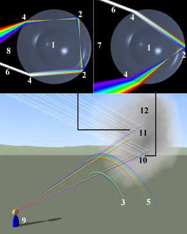

Когда бы радуга ни возникала, она всегда образуется игрой света на каплях воды. Обычно это
дождевые капли, изредка -
мелкие капли тумана. На самых мелких каплях, таких, из которых состоят облака, радуга не видна.
Радуга возникает из-за того, что солнечный свет испытывает преломление в
капельках воды, взвешенных в воздухе. Эти капельки по-разному отклоняют свет разных цветов, в
результате чего белый свет разлагается в спектр.
В яркую лунную ночь можно увидеть радугу от Луны. Поскольку
человеческое зрение устроено так, что при слабом освещении
глаз плохо воспринимает цвета, лунная радуга выглядит белесой; чем ярче свет, тем «цветнее» радуга.

- сферическая капля,
- внутреннее отражение,
- первичая радуга,
- преломление,
- вторичная радуга,
- входящий луч света,
- ход лучей при формировании первичной радуги,
- ход лучей при формировании вторичной радуги,
- наблюдатель,
- область формирования радуги,
Центр окружности, которую описывает радуга, всегда лежит на прямой, проходящей через Солнце
(Луну)
и глаз наблюдателя,
то есть одновременно видеть солнце и радугу без использования зеркал невозможно.
Собственно говоря, радуга представляет собой полную окружность. Мы не можем проследить ее за горизонтом
только потому,
что мы не видим дождевых капель, падающих под нами.
С самолета или возвышенности можно видеть полную окружность.